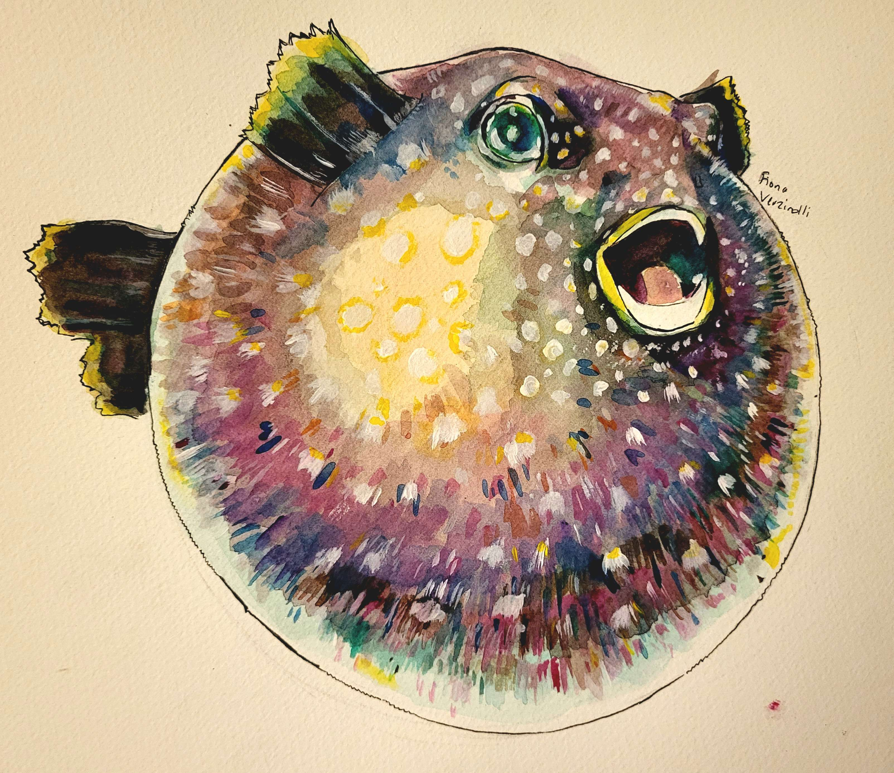
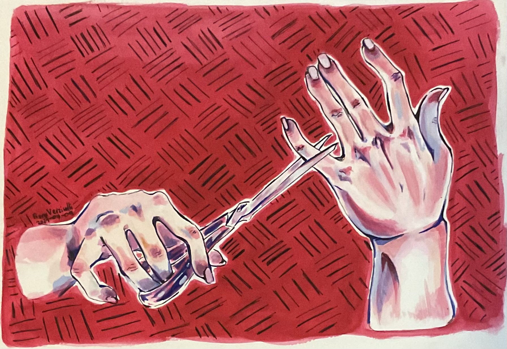
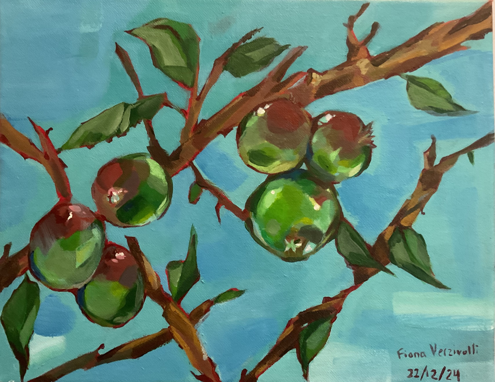
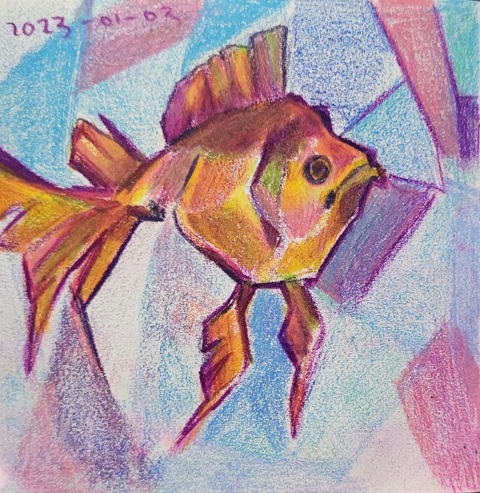
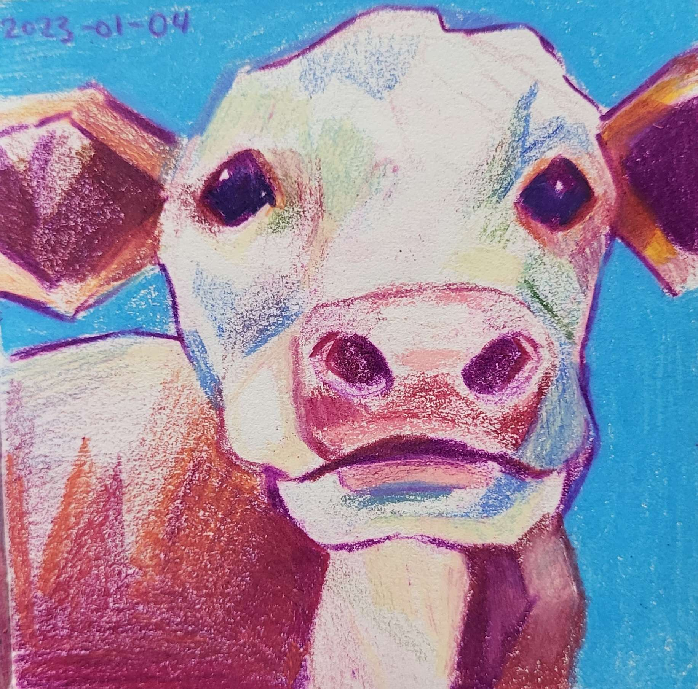
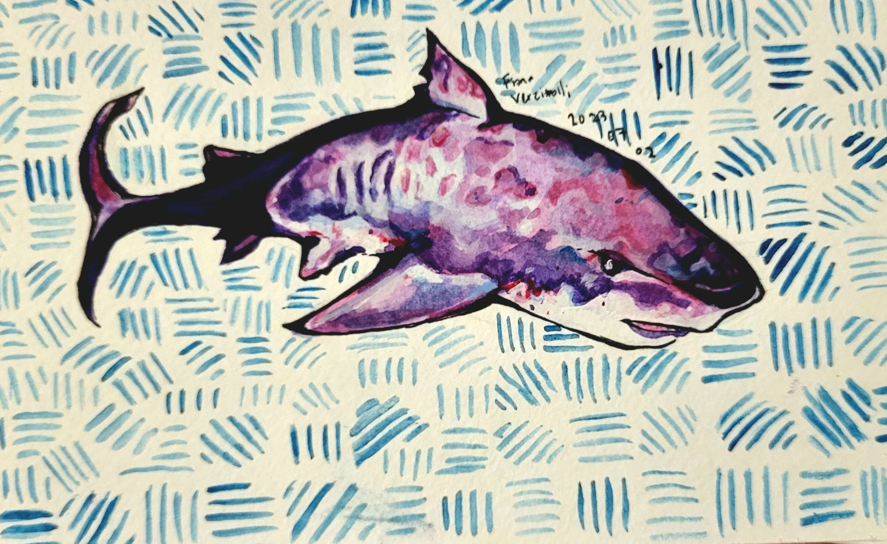
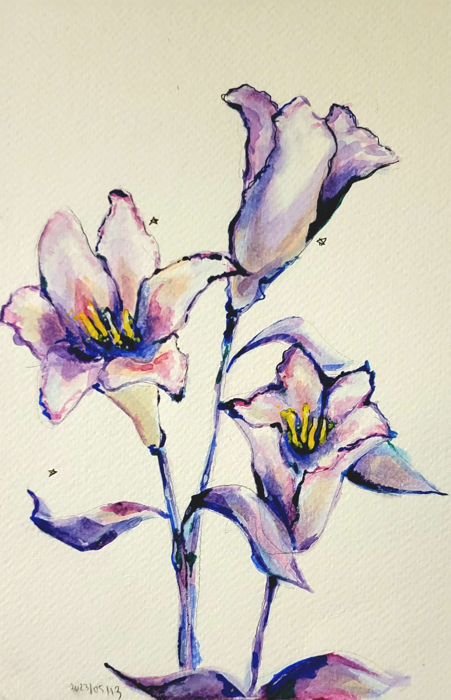
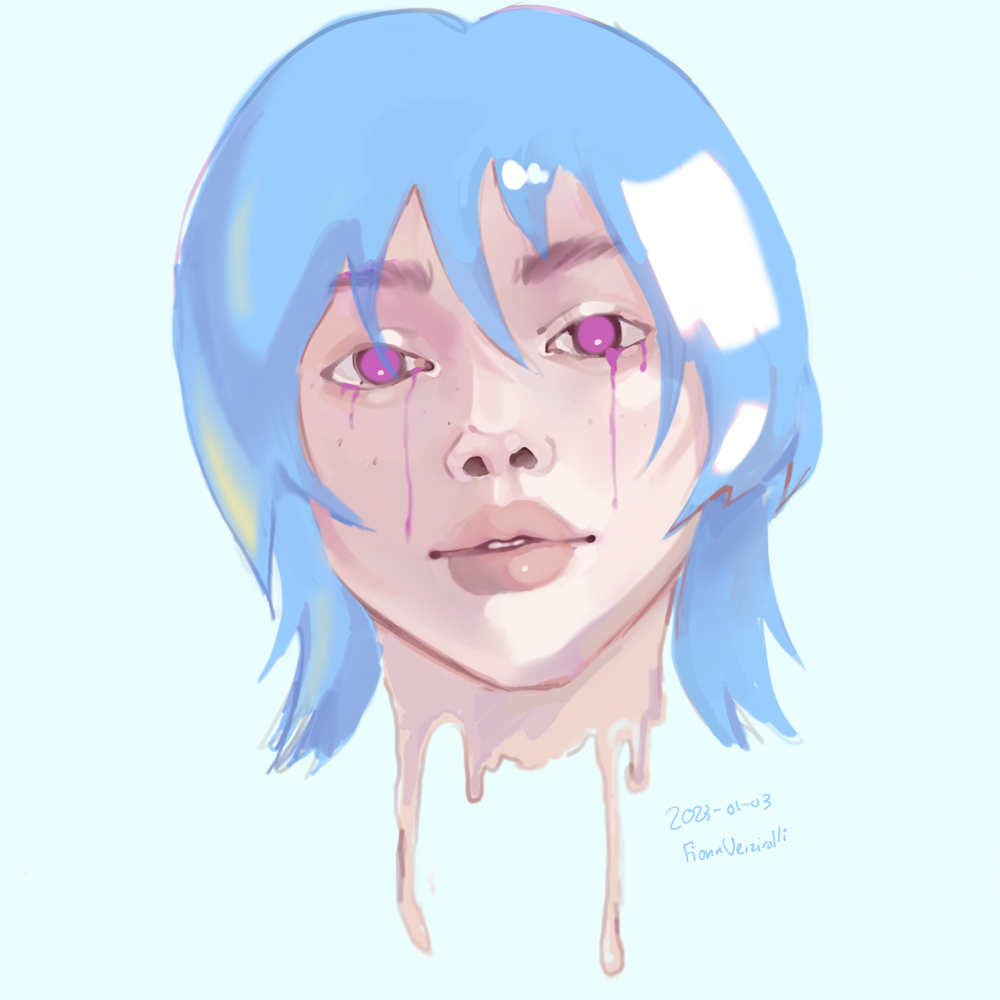

Welcome to a collection of my art. Feel free to use the menu bar to the left to navigate. I'm passionate about painting, sketching, and all things creative, so I made this site to share some of my works with you.
Information
Materials
The mediums I mainly use are acrylic paint and watercolor paint, since I'm the most comfortable with them. Although I'd love to experiment with oils more, I unfortunately do not have a ventilated workspace, and due to health hazards, this prevents me from using oil paint. For sketching and drawing, I use prismacolor pencils. My other supplies include dollar brand and Artist's Loft canvases and Sable watercolor brushes. For digital art, I use Procreate, and I use the default soft blend brush for every single piece.
Time
The length of time it takes me to finish a painting depends on what I am creating and its size. My smaller paintings take me 1-2 hours, but my larger ones might take me a few days. If I am really stuck on a painting, I work on it for roughly an hour, then resume the next day to get a fresh perspective.
References
I get my inspiration from Pinterest, and to practice drawing I use some of the pictures on my feed as a reference. This helps motivate me if I'm in an art block. My favourite things to draw include animals, plants and food.
Art Pieces
Traditional Art

Pufferfish, watercolor and gouache on paper

Pinkie Promise, watercolor on paper, reference unknown

Fruits, acrylic on canvas

Goldie, coloured pencil on paper

Cow, coloured pencil on paper

Shark, watercolor on paper

Floral, watercolor on paper
Digital Art
Home Is Wherever I Go, digital

The Woman, digital
About Me
My name is Fiona and I am currently a first year student studying Computer Science at the University of Toronto. My passions include programming and art (you can probably tell from this website haha). I grew up in Toronto, and my favourite places have got to be the lake by Humber Bay and Union Station, and Toronto Reference Library. When I move out, I really want to adopt a pet. Samoyeds, teacup pomeranians, and tabby cats have my attention. While I'm not drawing, coding, or going out with friends, you might catch me playing League of Legends and doing what my team calls "inting." I find that making projects like this website is super fun and exciting. Who knows, you might hear of another website by me soon...